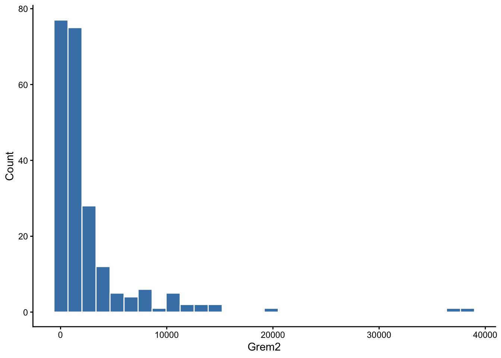
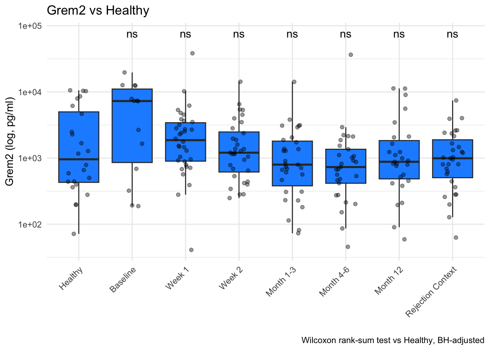
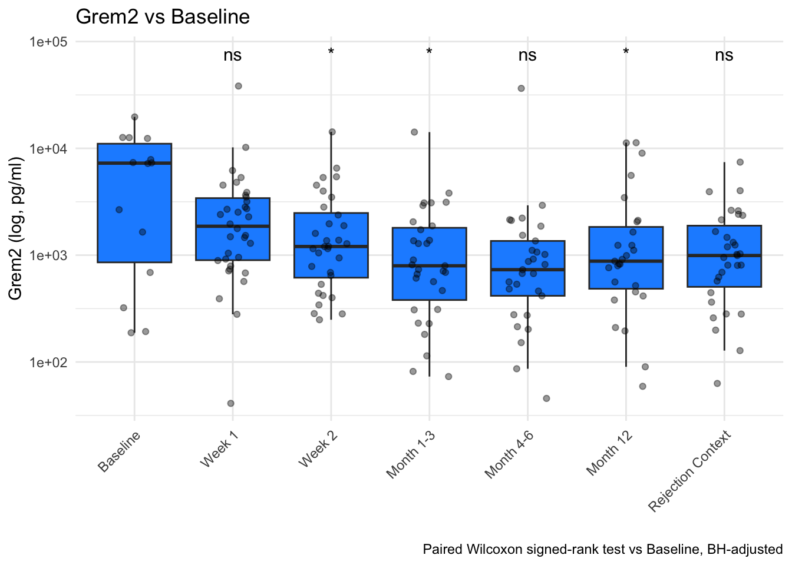
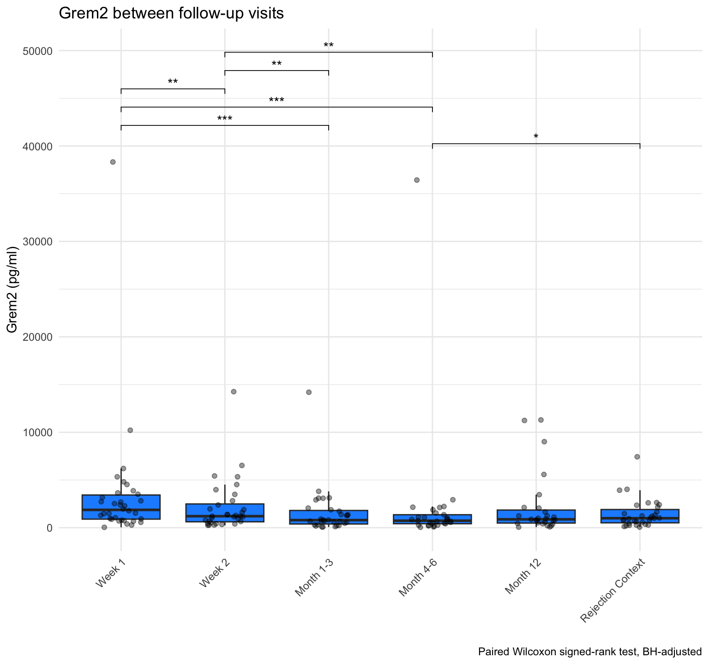

Analytes_Grem2
I. Hanka
2026-10-23
Last updated: 2026-10-23
Checks: 6 1
Knit directory: Luminex_CarTrans/
This reproducible R Markdown analysis was created with workflowr (version 1.7.2). The Checks tab describes the reproducibility checks that were applied when the results were created. The Past versions tab lists the development history.
The R Markdown file has unstaged changes. To know which version of
the R Markdown file created these results, you’ll want to first commit
it to the Git repo. If you’re still working on the analysis, you can
ignore this warning. When you’re finished, you can run
wflow_publish to commit the R Markdown file and build the
HTML.
Great job! The global environment was empty. Objects defined in the global environment can affect the analysis in your R Markdown file in unknown ways. For reproduciblity it’s best to always run the code in an empty environment.
The command set.seed(20261015) was run prior to running
the code in the R Markdown file. Setting a seed ensures that any results
that rely on randomness, e.g. subsampling or permutations, are
reproducible.
Great job! Recording the operating system, R version, and package versions is critical for reproducibility.
Nice! There were no cached chunks for this analysis, so you can be confident that you successfully produced the results during this run.
Great job! Using relative paths to the files within your workflowr project makes it easier to run your code on other machines.
Great! You are using Git for version control. Tracking code development and connecting the code version to the results is critical for reproducibility.
The results in this page were generated with repository version 51d7901. See the Past versions tab to see a history of the changes made to the R Markdown and HTML files.
Note that you need to be careful to ensure that all relevant files for
the analysis have been committed to Git prior to generating the results
(you can use wflow_publish or
wflow_git_commit). workflowr only checks the R Markdown
file, but you know if there are other scripts or data files that it
depends on. Below is the status of the Git repository when the results
were generated:
Ignored files:
Ignored: .DS_Store
Ignored: .Rhistory
Ignored: .Rproj.user/
Ignored: Quality-Control_files/
Ignored: analysis/.DS_Store
Ignored: data/
Ignored: html/
Untracked files:
Untracked: Early_late_rejection.Rmd
Untracked: analysis/Early_late_rejection.Rmd
Unstaged changes:
Modified: analysis/Analytes_CXCL10.Rmd
Modified: analysis/Analytes_Grem2.Rmd
Modified: analysis/Analytes_IL2R.Rmd
Modified: analysis/Analytes_PDL1.Rmd
Modified: analysis/Convalesence_Rejection.Rmd
Modified: analysis/Immunsuppression_Luminex.Rmd
Modified: analysis/Immunsuppression_Luminex_vsBaseline.Rmd
Modified: analysis/Luminex_HeatmapVisit.Rmd
Modified: analysis/Luminex_HeatmapVisit_vsBaseline.Rmd
Modified: analysis/Luminex_Overview.Rmd
Modified: analysis/PathologicalGrading_Luminex.Rmd
Modified: analysis/TransplantationRisk.Rmd
Modified: analysis/TransplantationRisk_vsBaseline.Rmd
Modified: analysis/index.Rmd
Note that any generated files, e.g. HTML, png, CSS, etc., are not included in this status report because it is ok for generated content to have uncommitted changes.
These are the previous versions of the repository in which changes were
made to the R Markdown (analysis/Analytes_Grem2.Rmd) and
HTML (docs/Analytes_Grem2.html) files. If you’ve configured
a remote Git repository (see ?wflow_git_remote), click on
the hyperlinks in the table below to view the files as they were in that
past version.
| File | Version | Author | Date | Message |
|---|---|---|---|---|
| Rmd | 51d7901 | IsabellaH1993 | 2026-10-22 | 22.10.2026_21:48 |
| html | 51d7901 | IsabellaH1993 | 2026-10-22 | 22.10.2026_21:48 |
| Rmd | 0b0f489 | IsabellaH1993 | 2026-10-20 | 20.10.2026_12:15 |
| html | 0b0f489 | IsabellaH1993 | 2026-10-20 | 20.10.2026_12:15 |
| html | 786822c | IsabellaH1993 | 2026-10-16 | 16.10.2026_11:43 |
| Rmd | e266d44 | IsabellaH1993 | 2026-10-16 | 16.10.2026_11:00 |
rm(list = ls())Grem 2
#Prep dataframe
df_grem2 <- table_lum_CarTrans_overall %>%
dplyr::select(Study_ID, Timepoint, Visit, Grem2)%>%
filter(!is.na(Grem2))ggplot(df_grem2, aes(x = Visit, y = Grem2)) +
geom_boxplot(outlier.shape = NA) +
geom_jitter(aes(color=Study_ID), width = 0.2, alpha = 0.4) +
scale_y_log10() +
theme_minimal() +
labs(
title = "Grem2 per patient",
x = "",
y = "Grem2 (log, pg/ml)"
) +
theme(axis.text.x = element_text(angle = 45, hjust = 1),
legend.position = "bottom")
df_grem2 <- df_grem2%>%
mutate(Timepoint = factor(Timepoint, levels = c("Healthy", "Baseline", "Week 1", "Week 2","Month 1-3", "Month 4-6", "Month 12", "Rejection Context")))
ggplot(df_grem2, aes(x = Timepoint, y = Grem2)) +
geom_boxplot(outlier.shape = NA) +
geom_jitter(aes(color=Study_ID), width = 0.2, alpha = 0.4) +
scale_y_log10() +
theme_minimal() +
labs(
title = "Grem2 per patient",
x = "",
y = "Grem2 (log, pg/ml)"
) +
theme(axis.text.x = element_text(angle = 45, hjust = 1),
legend.position = "bottom")
Statistische Auswertung
ggplot(df_grem2, aes(x = Grem2)) +
geom_histogram(bins = 30, fill = "steelblue", color = "white") +
labs(x = "Grem2", y = "Count") +
theme_classic()
Vergleich vs Healthy: different set of patients and healthy probands - unpaired test with wilcox-test
res_vs_healthy <- df_grem2 %>%
wilcox_test(Grem2 ~ Timepoint, ref.group = "Healthy") %>%
adjust_pvalue(method = "BH") %>%
add_significance("p.adj")
print(res_vs_healthy)# A tibble: 7 × 9
.y. group1 group2 n1 n2 statistic p p.adj p.adj.signif
<chr> <chr> <chr> <int> <int> <dbl> <dbl> <dbl> <chr>
1 Grem2 Healthy Baseline 24 14 116 0.120 0.677 ns
2 Grem2 Healthy Week 1 24 34 334 0.248 0.677 ns
3 Grem2 Healthy Week 2 24 32 371 0.837 0.837 ns
4 Grem2 Healthy Month 1-3 24 31 409 0.539 0.837 ns
5 Grem2 Healthy Month 4-6 24 29 408 0.290 0.677 ns
6 Grem2 Healthy Month 12 24 27 337 0.815 0.837 ns
7 Grem2 Healthy Rejection Context 24 31 401 0.631 0.837 ns ggplot(df_grem2, aes(x = Timepoint, y = Grem2)) +
geom_boxplot(outlier.shape = NA, fill="dodgerblue") +
geom_jitter(aes(fill="black"), width = 0.2, alpha = 0.4) +
geom_text(data = res_vs_healthy,
aes(x = group2, y = max(df_grem2$Grem2, na.rm = TRUE) * 2, label = p.adj.signif),
inherit.aes = FALSE, size = 4) +
scale_y_log10() +
theme_minimal() +
labs(
title = "Grem2 vs Healthy",
x = "",
y = "Grem2 (log, pg/ml)",
caption = "Wilcoxon rank-sum test vs Healthy, BH-adjusted"
) +
theme(axis.text.x = element_text(angle = 45, hjust = 1),
legend.position = "none")
Vergleich vs Baseline: same set of patients- paired wilcox test used
res_vs_baseline <- df_grem2 %>%
filter(Timepoint != "Healthy") %>%
group_by(Study_ID, Timepoint) %>%
summarise(Grem2 = mean(Grem2)) %>%
pivot_wider(names_from = Timepoint, values_from = Grem2) %>%
pivot_longer(-c(Study_ID, Baseline), names_to = "Timepoint", values_to = "Grem2") %>%
filter(!is.na(Baseline), !is.na(Grem2)) %>%
mutate(Timepoint = factor(Timepoint, levels = levels(df_grem2$Timepoint))) %>%
group_by(Timepoint) %>%
summarise(n_pairs = n(),
median_change = median(Grem2 - Baseline),
p = wilcox.test(Grem2, Baseline, paired = TRUE, exact = FALSE)$p.value) %>%
adjust_pvalue(method = "BH") %>%
add_significance("p.adj")`summarise()` has regrouped the output.
ℹ Summaries were computed grouped by Study_ID and Timepoint.
ℹ Output is grouped by Study_ID.
ℹ Use `summarise(.groups = "drop_last")` to silence this message.
ℹ Use `summarise(.by = c(Study_ID, Timepoint))` for per-operation grouping
(`?dplyr::dplyr_by`) instead.print(res_vs_baseline)# A tibble: 6 × 6
Timepoint n_pairs median_change p p.adj p.adj.signif
<fct> <int> <dbl> <dbl> <dbl> <chr>
1 Week 1 13 -281. 0.328 0.328 ns
2 Week 2 12 -2684. 0.00859 0.0172 *
3 Month 1-3 13 -4453. 0.00642 0.0172 *
4 Month 4-6 12 -3504. 0.126 0.151 ns
5 Month 12 11 -3587. 0.00669 0.0172 *
6 Rejection Context 5 -3206. 0.106 0.151 ns ggplot(filter(df_grem2, Timepoint != "Healthy"), aes(x = Timepoint, y = Grem2)) +
geom_boxplot(outlier.shape = NA, fill="dodgerblue") +
geom_jitter(aes(fill = "black"), width = 0.2, alpha = 0.4) +
geom_text(data = res_vs_baseline,
aes(x = Timepoint, y = max(df_grem2$Grem2, na.rm = TRUE) * 2, label = p.adj.signif),
inherit.aes = FALSE, size = 4) +
scale_y_log10() +
theme_minimal() +
labs(
title = "Grem2 vs Baseline",
x = "",
y = "Grem2 (log, pg/ml)",
caption = "Paired Wilcoxon signed-rank test vs Baseline, BH-adjusted"
) +
theme(axis.text.x = element_text(angle = 45, hjust = 1),
legend.position = "none")
res_followups <- df_grem2 %>%
filter(!Timepoint %in% c("Healthy", "Baseline")) %>%
group_by(Study_ID, Timepoint) %>%
summarise(Grem2 = mean(Grem2), .groups = "drop") %>%
{inner_join(., ., by = "Study_ID", suffix = c(".1", ".2"), relationship = "many-to-many")} %>%
filter(as.integer(Timepoint.1) < as.integer(Timepoint.2)) %>%
group_by(group1 = as.character(Timepoint.1), group2 = as.character(Timepoint.2)) %>%
summarise(n_pairs = n(),
median_change = median(Grem2.2 - Grem2.1),
p = wilcox.test(Grem2.2, Grem2.1, paired = TRUE, exact = FALSE)$p.value,
.groups = "drop") %>%
adjust_pvalue(method = "BH") %>%
add_significance("p.adj")
print(res_followups)# A tibble: 15 × 7
group1 group2 n_pairs median_change p p.adj p.adj.signif
<chr> <chr> <int> <dbl> <dbl> <dbl> <chr>
1 Month 1-3 Month 12 26 155 9.59e-1 9.59e-1 ns
2 Month 1-3 Month 4-6 29 -34.4 2.52e-1 3.15e-1 ns
3 Month 1-3 Rejection Conte… 16 88.2 6.98e-1 7.48e-1 ns
4 Month 12 Rejection Conte… 15 -55.4 5.51e-1 6.36e-1 ns
5 Month 4-6 Month 12 26 124. 1.87e-1 2.55e-1 ns
6 Month 4-6 Rejection Conte… 16 298. 6.63e-3 1.66e-2 *
7 Week 1 Month 1-3 30 -1270. 9.31e-5 6.98e-4 ***
8 Week 1 Month 12 27 -664. 3.15e-2 6.76e-2 ns
9 Week 1 Month 4-6 29 -1312. 7.59e-5 6.98e-4 ***
10 Week 1 Rejection Conte… 16 -620. 7.44e-2 1.33e-1 ns
11 Week 1 Week 2 31 -800. 2.04e-4 1.02e-3 **
12 Week 2 Month 1-3 30 -402. 8.62e-4 3.23e-3 **
13 Week 2 Month 12 26 -207. 7.97e-2 1.33e-1 ns
14 Week 2 Month 4-6 28 -433. 1.49e-3 4.47e-3 **
15 Week 2 Rejection Conte… 16 -243. 1.15e-1 1.72e-1 ns ggplot(filter(df_grem2, !Timepoint %in% c("Healthy", "Baseline")), aes(x = Timepoint, y = Grem2)) +
geom_boxplot(outlier.shape = NA, fill="dodgerblue") +
geom_jitter(aes(fill = "black"), width = 0.2, alpha = 0.4) +
stat_pvalue_manual(
res_followups %>%
filter(p.adj < 0.05) %>%
mutate(y.position = max(df_grem2$Grem2, na.rm = TRUE) * (1 +0.05 * row_number())),
label = "p.adj.signif", tip.length = 0.01) +
theme_minimal() +
labs(
title = "Grem2 between follow-up visits",
x = "",
y = "Grem2 (pg/ml)",
caption = "Paired Wilcoxon signed-rank test, BH-adjusted"
) +
theme(axis.text.x = element_text(angle = 45, hjust = 1),
legend.position = "none")
sessionInfo()R version 4.6.1 (2026-06-24)
Platform: aarch64-apple-darwin23
Running under: macOS Sequoia 15.1
Matrix products: default
BLAS: /Library/Frameworks/R.framework/Versions/4.6/Resources/lib/libRblas.0.dylib
LAPACK: /Library/Frameworks/R.framework/Versions/4.6/Resources/lib/libRlapack.dylib; LAPACK version 3.12.1
locale:
[1] en_US.UTF-8/en_US.UTF-8/en_US.UTF-8/C/en_US.UTF-8/en_US.UTF-8
time zone: Europe/Zurich
tzcode source: internal
attached base packages:
[1] grid stats graphics grDevices utils datasets methods
[8] base
other attached packages:
[1] ggpattern_1.3.1 gridExtra_2.3.1 cowplot_1.2.0
[4] patchwork_1.3.2 plotly_4.12.1 EnhancedVolcano_1.30.0
[7] RColorBrewer_1.1-3 circlize_0.4.18 ComplexHeatmap_2.28.0
[10] pheatmap_1.0.13 corrplot_0.95 ggcorrplot_0.3.0
[13] ggbeeswarm_0.7.3 ggrepel_0.9.8 ggpubr_1.0.0
[16] rstatix_1.1.0 readxl_1.5.0.1 writexl_2.0.1
[19] openxlsx_4.2.9 gtsummary_2.6.1 flextable_0.10.1
[22] tableone_0.13.2 table1_1.5.1 scales_1.4.0
[25] here_1.0.2 janitor_2.2.1 magrittr_2.0.5
[28] data.table_1.18.6.1 lubridate_1.9.5 forcats_1.0.1
[31] stringr_1.6.0 dplyr_1.2.1 purrr_1.2.2
[34] readr_2.2.0 tidyr_1.3.2 tibble_3.3.1
[37] ggplot2_4.0.3 tidyverse_2.0.0
loaded via a namespace (and not attached):
[1] shape_1.4.6.1 rstudioapi_0.19.0 jsonlite_2.0.0
[4] farver_2.1.2 rmarkdown_2.32 GlobalOptions_0.1.4
[7] fs_2.1.0 ragg_1.5.2 vctrs_0.7.3
[10] askpass_1.2.1 htmltools_0.5.9 survey_4.5
[13] broom_1.0.13 cellranger_1.1.0 Formula_1.2-6
[16] sass_0.4.10 bslib_0.12.0 htmlwidgets_1.6.4
[19] cachem_1.1.0 uuid_1.2-2 whisker_0.4.1
[22] lifecycle_1.0.5 iterators_1.0.14 pkgconfig_2.0.3
[25] Matrix_1.7-6 R6_2.6.1 fastmap_1.2.0
[28] clue_0.3-68 snakecase_0.11.1 digest_0.6.39
[31] colorspace_2.1-4 S4Vectors_0.50.3 rprojroot_2.1.1
[34] textshaping_1.0.5 labeling_0.4.3 timechange_0.4.0
[37] httr_1.4.9 abind_1.4-8 compiler_4.6.1
[40] fontquiver_0.2.1 withr_3.0.3 doParallel_1.0.17
[43] S7_0.2.2 backports_1.5.1 carData_3.0-6
[46] DBI_1.3.0 ggsignif_0.6.4 openssl_2.4.2
[49] rjson_0.2.23 tools_4.6.1 vipor_0.4.7
[52] otel_0.2.0 beeswarm_0.4.0 zip_3.0.2
[55] httpuv_1.6.17 glue_1.8.1 promises_1.5.0
[58] cluster_2.1.8.3 generics_0.1.4 gtable_0.3.6
[61] tzdb_0.5.0 hms_1.1.4 utf8_1.2.6
[64] xml2_1.6.0 car_3.1-5 BiocGenerics_0.58.1
[67] foreach_1.5.2 pillar_1.11.1 later_1.4.8
[70] mitools_2.7 splines_4.6.1 lattice_0.23-1
[73] survival_3.8-12 tidyselect_1.2.1 fontLiberation_0.1.0
[76] knitr_1.52 git2r_0.36.2 fontBitstreamVera_0.1.1
[79] IRanges_2.46.0 stats4_4.6.1 xfun_0.61
[82] matrixStats_1.5.0 stringi_1.8.9 workflowr_1.7.2
[85] yaml_2.3.12 evaluate_1.0.5 codetools_0.2-20
[88] officer_0.7.6 gdtools_0.5.1 cli_3.6.6
[91] systemfonts_1.3.2 jquerylib_0.1.4 Rcpp_1.1.2
[94] png_0.1-9 parallel_4.6.1 viridisLite_0.4.3
[97] crayon_1.5.3 GetoptLong_1.1.1 rlang_1.3.0